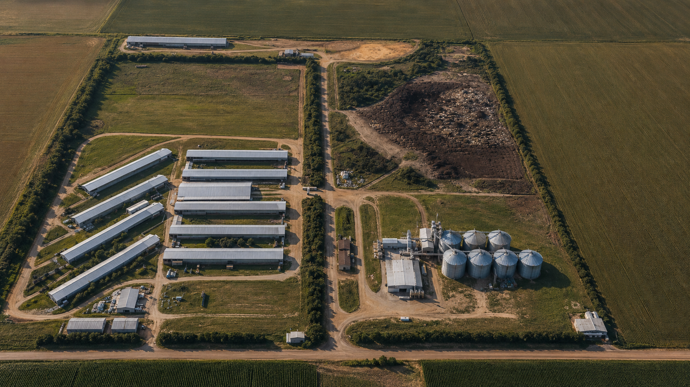
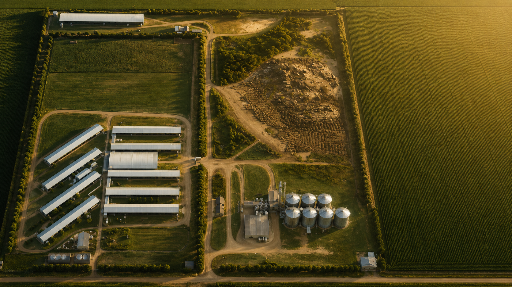
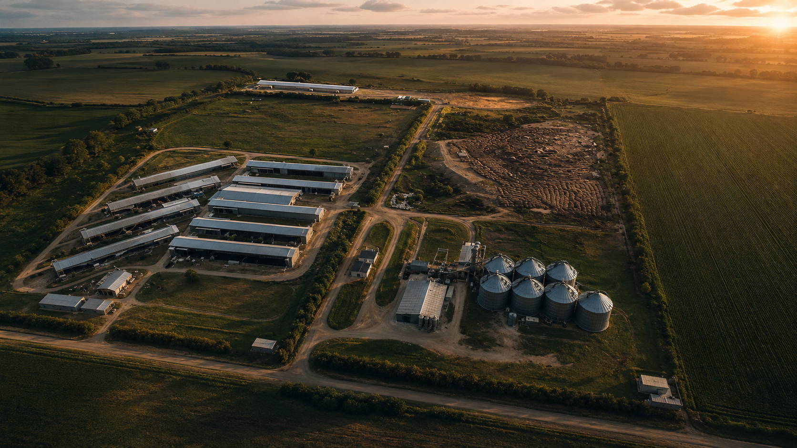

A
Vista Realista Aérea
Vista tipo drone del predio, con campo, caminos, galpones, silos y planta en estilo realista.
Estas son tres muestras visuales para imaginar distintos caminos de render y recorrido.

Vista tipo drone del predio, con campo, caminos, galpones, silos y planta en estilo realista.

Una versión más elegante, con luz cinematográfica, pensada para reuniones y presentaciones.

Una idea visual de cómo podría verse un recorrido tipo drone por el predio.
Con estas referencias podemos definir por WhatsApp qué dirección visual conviene desarrollar primero.